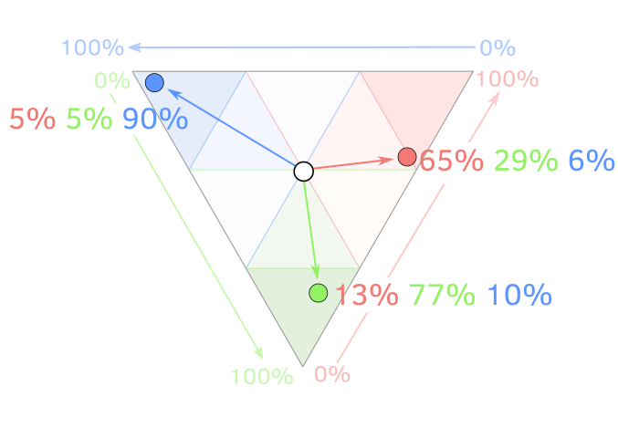

Often the electoral geography of Ukraine is narrowed only to the differences between several regions, for example, East and West. This simplification draws artificial boundaries. However, the real picture is much more interesting.
For better experience we recommend to view project on big screen
Let's look at the details and see the behavior of voters in different regions.
This is what the familiar national context looks like: a traditionally high level of support for national democratic forces in the West and the Center, and support for pro-Russian and communist forces in the East and South. But is it really true?
We divided all parties that participated in the parliamentary elections of 2006-2019 into three types:
- national-democratic (typical examples: Nasha Ukraina, Svoboda)
- pro-Russian or communist (Party of Regions, Communist Party of Ukraine)
- populist (Yulia Tymoshenko Bloc, Servant of the People).
Imagine the political preferences of voters in the form of a triangle, where the
blue corner indicates the national democratic forces;
the red corner, the pro-Russian and communist parties;
the green, the populist.
Any ratio of votes for these three types of political forces can be coded by a point on this triangle.
For example, if voters gave each type of political force 33.3%, we get a position in the middle of the triangle (white dot in the center). This is rare: most likely, some forces will have more support, so the point will shift, respectively, in the direction of the blue, green, or red corner.

These deviations from the "center" for each polling station in the parliamentary elections are marked on the map by arrow lines, where the beginning of the line is the center of the triangle. The higher the percentage of votes for a particular type of force, the longer and more directed to the appropriate angle is the line. For a quick look, you can simply navigate by color.
In general, both the slope and the color of the lines show the proportion of votes received by the parties in these three directions: the slope to the left or “to the west” and the blue arrows are the national democratic parties; the slope to the right or "to the east" and the reds are pro-Russian; leaning down, the greens are the populists. Switch between years to compare election results. You can zoom in on the map with the +/- buttons in the upper left corner of the map. One line is one polling station..
The interactive map allows you to identify districts, towns, and cities that do not vote like their regions. Sometimes these are only temporary electoral successes of one of the parties in one election, which disappears in the next. At the same time, many locations in Ukraine have long-standing features of political views.
If we aggregate the data of polling stations to the level of cities and districts, we can make these patterns more apparent.
Not only East and West
During 2006-2019, three Galician oblasts (Lviv, Ivano-Frankivsk, and Ternopil oblasts) and two Donbas oblasts (Donetsk and Luhansk oblasts) had the smallest internal differences in party support.
At the same time, some other oblasts had greater differences in electoral preferences between districts than individual oblasts did among themselves.
Perhaps the issues of electoral preferences have to do with local political elites and the mobilization of the electorate on the grassroot level. These issues are unexplored in Ukraine.
Linguistic, ethnic, socio-economic variables also have no explanatory force for many specific cases when we see the difference in the electoral behavior of cities and districts within one region.
For example, in Kharkiv and Kirovohrad oblasts, more ethnic Russians and Russian-speakers live in large cities, but in the 2006-2012 elections we can see that Kropyvnytskyi and Svitlovodsk (both are in Kirovohrad oblast), as well as Kharkiv and Lyubotyn, cast more votes for pro-Ukrainian political forces than is the average in these areas.
If you look at the graphs by oblast, you can see that the city of Horishni Plavni (formerly Komsomolsk) in 2006-2019 did not follow the electoral turn of Poltava oblast, but was the most "pro-Party of regions." Perhaps this is due to the fact that the city was created in Soviet times as a satellite of a large plant "Poltava Mining and Processing Plant", and there, at the request of the Soviet authorities, came many Komsomol volunteers, including from Russia. On January 6, 1961, the newspaper Komsomolskaya Pravda wrote: "There is the city of Komsomolsk-on-Amur, the city of Komsomolsk-on-Dnieper will appear," after which a campaign began to move young people to this new “construction site of the century”.
On the contrary, in 2006-2012 the city of Nikopol steadily showed the highest support of "national-democratic" forces in Dnipropetrovsk oblast.
The city of Slavutych (built for the families of Chornobyl nuclear power plant workers, ethnic composition: Ukrainians - 44.3%; Russians - 45.8%; Belarusians - 4.8%) of Kyiv oblast in 2006-2012 also fell out of the regional trend and supported the Party of Regions.
The city of Yuzhnoukrainsk (as in Slavutych, inhabited by the people who work at the nuclear power plant, South Ukrainian. Ethnic structure: Ukrainians - 73,9%; Russians - 21,7%; Belarusians - 0,7%;) in Mykolaiv oblast in 2006-2014 consistently shows the highest level of support for "national democratic" forces in the oblast.
Nedrihailiv district, where ex president Viktor Yushchenko was born, also had a record support for his “Nasha Ukraina” party in Sumy oblast in 2002-2007.
Below are graphs for districts and cities for each region. Switch years, look for the cities that interest you. The graphs are grouped by similarity of votes in the oblasts.
Methodology
We equated the polling stations of 2006-2007 to the unified numbers introduced in the 2012 elections, by address and area covered. Most of the work was done manually, with the help of our tireless interns. As a result, we have established equivalents for more than 90% of polling stations, which allows us to compare voting results by year for almost 30,000 polling stations.
Most parties in Ukraine can hardly be called ideological. Classification based on party programs is unreliable because what is declared in the programs often differs from the parties’ actions; also, by their general formulations parties do not differ much from each other. Often the pro-Russian nature of the party is manifested only over time, when voting for important bills, such as the continuation of the Russian Black Sea Fleet's base agreement in the Crimea, language issues, and so on.
According to our rough estimates, the parties can be divided into three groups:
National Democratic: Nasha Ukraina, Nasha Ukraine - People's Self-Defense (Narodna Samooborona) Bloc, Ukrainian People's Bloc of Kostenko and Pliushch, Civic Bloc PORA-PRP, UDAR, VO Svoboda, Popular Front (Narodny Front), Petro Poroshenko Bloc, Samopomich , Hrytsenko 's Civic Position (Hromadianska Pozytsiya), Zastup, Right Sector, European Solidarity, Voice (Holos), Groysman' s Ukrainian Strategy.
Pro-Russian or Communist: Party of Regions, Socialist Party of Ukraine, Communist Party of Ukraine, Natalia Vitrenko Bloc "People's Opposition", "Lytvyn People's Bloc", "Viche" Party, "Opposition Bloc NOT SO!" (NE TAK!), "Lytvyn Bloc", Progressive Socialist Party Of Ukraine, Natalia Korolevska's Party "Ukraine - Forward!", Opposition Bloc, Serhiy Tihipko's "Strong Ukraine", Opposition Platform - FOR LIFE, Opposition Bloc, Shariy’s Party.
Populist: Yulia Tymoshenko Bloc, Batkivshchyna, Oleh Lyashko's Radical Party, Servant of the People, Strength and Honor.
Authors: Mykola Dobysh, Anatoliy Bondarenko, Yevheniia Drozdova, Nadja Kelm, а також Yelyzaveta Dorontseva, Hanna Arhirova, Natalia Kindrativ, Alina Dziubko, Yana Yarmak, Anastasiia Opryshchenko, Yaroslav Andriienko.